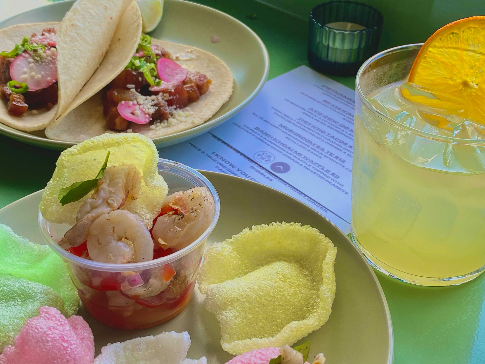

Hi my name is (Allison/
叶子
/
앨리슨
). I'm 21 years old. Hi my name is (Allison/
叶子
/
앨리슨
). I'm 21 years old.
자유시간이 더 있으면, 친구랑
happy hour
에 가고,
看
(K)
电视剧
，
追晚霞
하고 싶다. 자유시간이 더 있으면, 친구랑
happy hour
에 가고,
看
(K)
电视剧
，
追晚霞
하고 싶다.
나는 요즘 (동아리/수업/숙제) 때문에 (
废寝忘食
/눈코뜰새없이) 바빠서 기분이 나빠. 나는 요즘 (동아리/수업/숙제) 때문에 (
废寝忘食
/눈코뜰새없이) 바빠서 기분이 나빠.